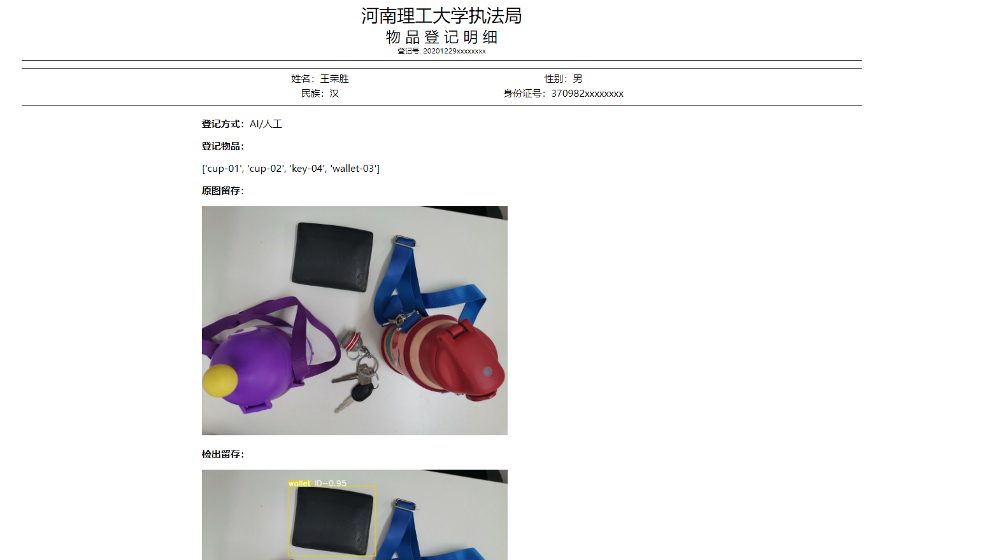
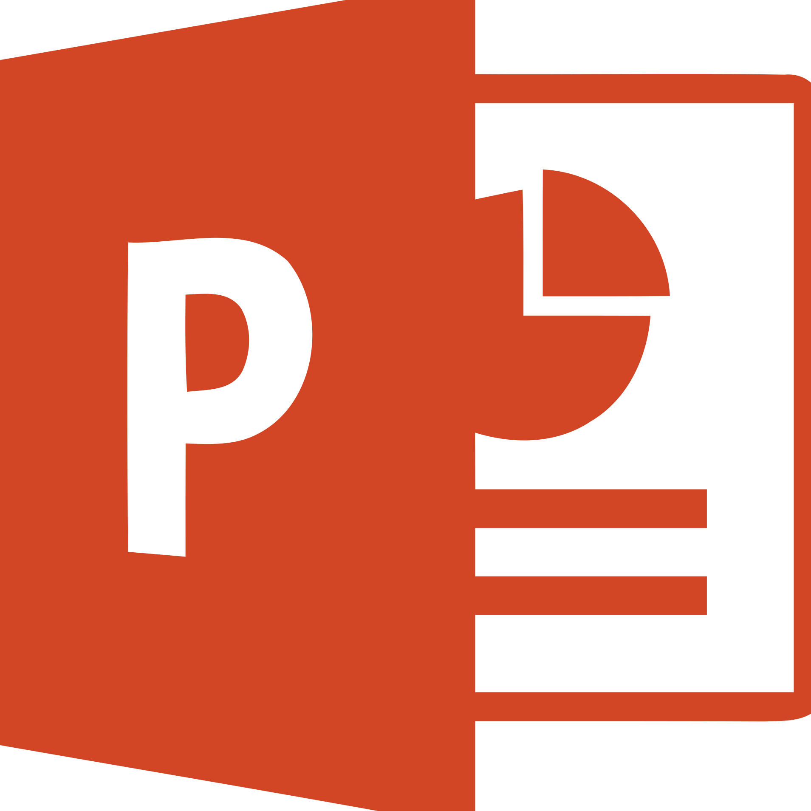
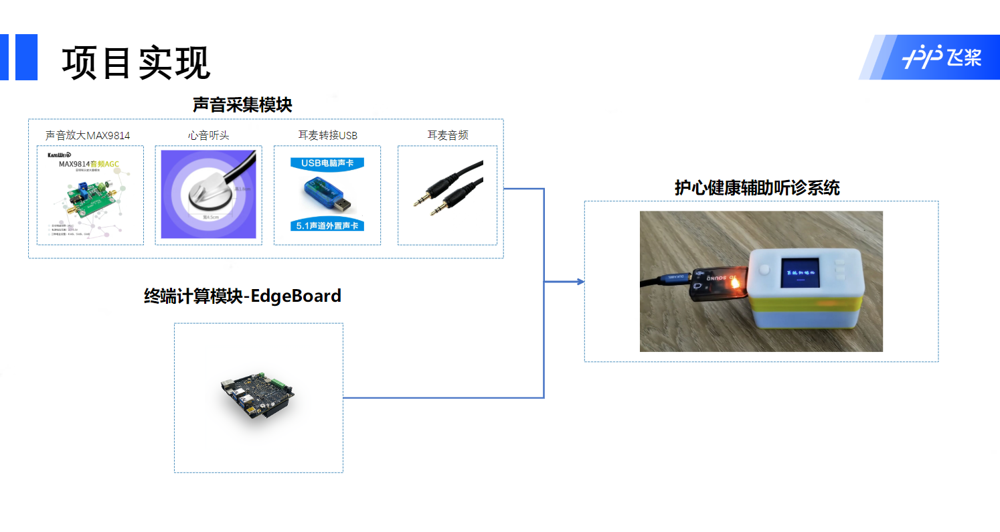
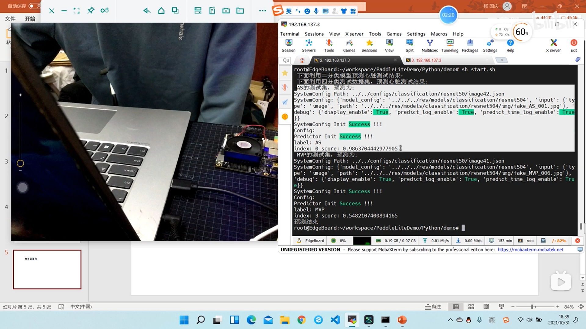
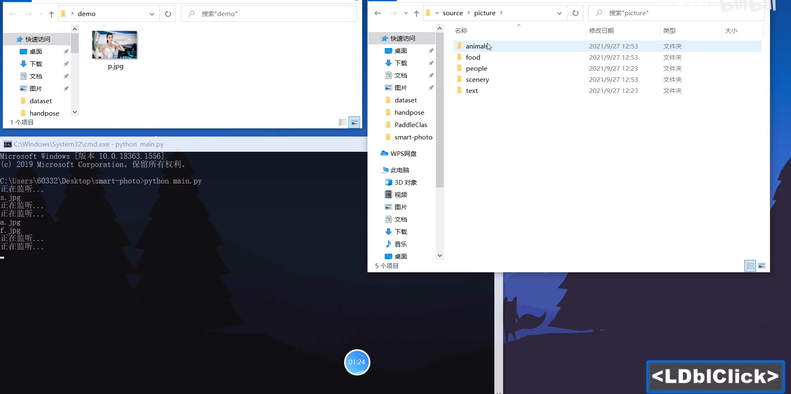
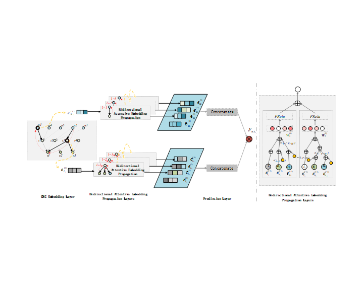
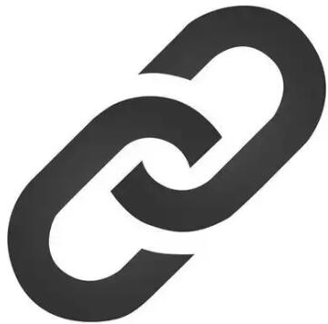

王荣胜
“Nothing is impossible.”
河南理工大学计算机科学与技术学院的本科生，我的研究兴趣是人工智能、深度学习、计算机视觉何推理部署。对自我的评价是：做人诚实守信,吃苦耐劳,虚心好学,为人诚恳。 对计算机有着浓厚的兴趣,在校期间积极协助导师完成其科研和其他课题项目,拥有扎实科学研究与创新能力。擅于与他人交流交际,有一定的组织和领导能力,具有很强的进取心,做事认真负责,有强烈的团队合作意识。 关注业内产品和体验，及时关注和学习业界最新技术,善于发现问题,对新鲜事物充满好奇心。性格开朗,乐观向上,抗压能力强。
链接:
GitHub,
Zhihu,
Bilibili,
AI Studio
邮箱:
wrs6@88.com or
311809000608@home.hpu.edu.cn
CV:
CV(CN),
CV(EN)
最新讯息
- [2022.06] 河南理工大学 计算机科学与技术学院 人工智能专业毕业.
项目经历
(2022.05)本科毕设:基于深度学习的嫌疑人涉案物品检测识别与登记系统
嫌疑人涉案物品登记是公安人员执法中必不可少的环节，目前大都采用人工登记来实现。该嫌疑人涉案物品检测识别登记系统核心算法基于YOLOv5算法改进开发而来。针对涉案物品数据，网上尚未有合适的数据集可以使用，本文通过手工采集、筛选和标注，采用半自动标注、离线数据增强技术，构建了一个包含十大常见涉案物品的数据集。使用构建的数据集对原始YOLOv5算法进行性能比较，在选出的基础YOLOv5(n)模型上进行多标签改进，在不增加模型数量和大量训练时间的情况下，通过标签压缩使得基础模型具有单框多标签检测能力，并将此改进后算法应用在整个底层系统中。在核心算法选择上，本文不仅比较了经典的其他目标检测网络，还进行了在包含TensorRT、OpenVINO等不同环境下的部署测试的性能比较工作。最后为了便于基层行政执法人员使用该系统，使用Flask提供API服务，由Gradio构建了包含多种功能的前端可视化检测识别界面。以该项研究为基础，更可以拓展到医院手术室手术物品清点管理工作、后勤部物品管理登记等各方面的任务中。 [pdf] [demo]
 |
(2021.12)基于飞桨的护“心”健康辅助听诊系统
团队提出了一种基于飞桨PaddlePaddle与 EdgeBoard 结合的边缘心音听诊诊断设备。该设备借助飞桨使用深度学习对心音特征提取(Overlap、傅里叶变换等)以此对心音进行初步识别诊疗，提前诊疗预防心脏疾病的发生，降低实际生活中心脏疾病的误诊率。
[pdf] 
 |
 |
Note: 该项目参与2021年百度人工智能创意赛创新组，获得全国二等奖. 获奖名单[pdf]新闻宣传 [news]
(2021.09)飞桨PaddleClas构建个人PC智慧相册
本项目基于飞桨图像分类套件PaddleClas提出了利用图像分类技术训练常见照片图像分类模型解决PC端照片智能分类问题。PaddleClas是飞桨为工业界和学术界所准备的一个图像识别任务的工具集，助力使用者训练出更好的视觉模型，从而应用落地。
[code]
[demo]
[code]

 |
Note: 该项目最初是为了参加2021飞桨黑客松比赛. 飞桨PaddlePaddle官方宣传 [news]
出版物

一种双向注意力的知识图谱神经网络推荐 本文提出一种双向注意力机制的知识图谱神经网络推荐算法，首先将图神经网络与对称注意力机制相结合，然后采用双向翻译模型对知识图谱中用户-项目信息进行特征的嵌入表示，使得注意力机制在决策权重时考虑的关系更全面。(王建芳，宁辉，王荣胜), In XXX, 2021, 正在投稿.[bib] [arXiv] [code]
荣誉/奖项
荣誉
百度飞桨深度学习技术开发者认证专家 
2021河南理工大学校级三好学生
2021河南理工大学二等孙越崎优秀学生奖学金
2019河南理工大学三等孙越崎优秀学生奖学金
chevereto中文文档译者[Link]
简道云认证接口开发工程师
2020腾讯云+社区年度优秀作者
Datawhale《公益AI》组队学习优秀学习者
百度Paddle2.0高层API课程优秀学员（3/1600+）
机器学习 Study Jam 第二季优秀学员
OpenVINO能力认证证书
奖项
2021高校人工智能创意赛创意组全国二等奖. [certificate]
![[certificate]](images/certificate/02-区域赛三等奖-王荣胜-护心健康.png){kind=link}
2021国家级大学生创新创业训练计划：中学实验考试视频分析与智能评分[Link]
2021中国机器人及人工智能大赛河南省三
2021高校人工智能创意赛创意组区域三等奖
2021科大讯飞AI创意集市月度创意作品
2020基于人工智能把英语语音分词的引擎软件V1.0.登记号：2020SR0100463.
2021科大讯飞AI创意集市月度优秀作品
河南理工大学第十届机器人大赛校三
2020百度EasyDL通用场景识别算法大赛个人赛第二名
2020百度EasyDL图像识别创新应用大赛个人赛第九名
第十届河南理工大学ACM程序设计大赛三等奖
2020人工智能应用挑战赛个人赛全国第三[Link]
2019互联网+大学生创新创业大赛校赛三等
全国大学英语四级考试
普通话水平等级测试二级已等
2020华英杯大学生创新创业大赛一等奖：基于深度学习的驾驶人疲劳检测系统
2020华英杯大学生创新创业大赛一等奖：基于EasyDL的骑乘人员头盔佩戴检测识别
2020大学生计算机设计大赛校二
2020AI图像分类成长赛-福字分类三等奖
2019全国高校计算机能力挑战赛python程序设计区域三等
第十届河南理工大学ACM程序设计大赛校三
2019第二届中青杯全国大学生数学建模本科组成功参赛奖
华为云ModelArts人工智能技能认证证书
阿里云API接口调用专项认证证书
经历
河南理工大学百度飞桨领航团团长.[Link]
2019北京智源大会参会